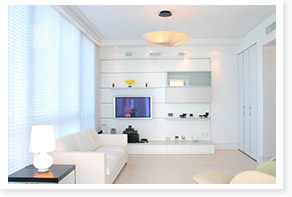
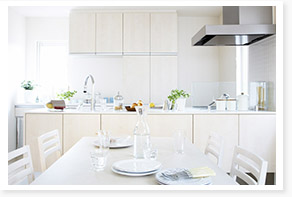
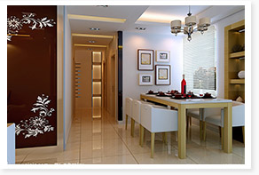
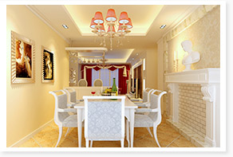
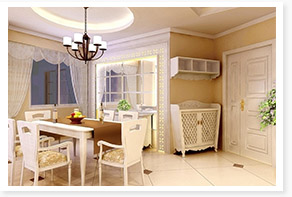

首页
大宝化工
公司简介
企业理念
新闻中心
技术研发
工程服务
大宝荣耀
产品中心
装修涂料
工业涂料
工程案例
视频欣赏
涂料指南
涂料工艺
居家生活
知识讲堂
漆量计算器
在线服务
联系我们
人才招聘
在线留言
装修工艺
居家生活
知识讲堂
漆量计算器
居家生活

餐厅的环境指标，你知道多少
介绍：餐厅的环境指标要根据不同的人群需求做出不同的设计装修。餐厅反映了家庭的生活质量，成功的餐厅设计应该最大强度地利用空间，有着合理的布局，能营造出一种轻松怡人的进餐环境。
更新时间：
2015-03-16

装修餐厅的四个必备要素
介绍： 餐厅装修是一件很不容易的事情，很多经历过装修的家庭都有感而发。既要考虑位置的选择已经餐厅装修时的风水，又要考虑到如何去搭配才能把自己的精神追求和品味体现出来，更加要考虑到的是如何选择家具、餐桌等与室内的
更新时间：
2015-03-16

餐厅背景墙的设计原则和色彩搭配
介绍：餐厅是家人就餐、亲朋好友相聚的场所，于是，餐厅景墙成了最吸引人们眼球的地方。在家装设计中，餐厅背景墙早已成了设计的“焦点”，从装饰到颜色搭配，都体现主人个性化的品位。
更新时间：
2015-03-16

餐厅的设计要素，实用性很重要
介绍： 餐厅是我们用餐的地方，从设计上而言，小编觉得实用性更为重要。所谓实用性就是通过装饰、颜色的巧妙搭配来调节人们的食欲。
更新时间：
2015-03-16

餐厅室内设计配色方案 真是秀色可餐
介绍：颜色能够潜移默化地影响到我们生活的方方面面，这已经不是一个秘密。不同的颜色可以影响一个人的态度，甚至是在观感上形成压倒性的效果。在进行餐厅设计的时候，配色方案就显得尤为重要了。如果对餐厅设计有所研究的朋友们，可要密切关注小宝接下来要讲的内容喽!
更新时间：
2015-03-16
友情链接:
木器家具漆
墙面乳胶漆
木器涂料
金属塑胶涂料
建筑涂料
店面查找
大宝家具 |
大宝国际 |
会员中心 |
联系我们 |
网站地图
东莞大宝化工制品有限公司版权所有 粤ICP备11019876号
客服热线：400-188-5117
顶部
返回顶部
这里尽量多些
以便页面出现滚动条，限于篇幅本文此处略去